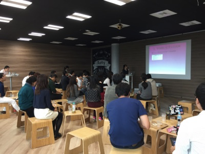
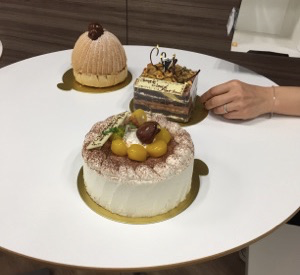
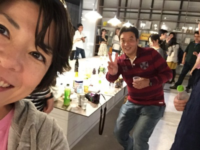

鉄は熱いうちに打て
=============================
PyLadies3周年パーティーに参加しました¶
2017-10-15
10月15日に PyLadies Tokyo - 3周年記念パーティ に参加しました。楽しかったです。
去年も参加したんですが、今年は知っている人も増えて非常に楽しかったです。N周年パーティーだけは男性も参加可っていうのもいいですね。
集合写真にど真ん中で写ってます。 PyLadies TokyoのTシャツ集めるマンなので、着て行ったら、なんとシャツ着ている人はnobollsさんと私だけ！
集合写真です！ご参加ありがとうございます(^-^) #pyladiesTokyo pic.twitter.com/fcXN26yE5W
— PyLadiesTokyo (@PyLadiesTokyo) 2017年10月15日
一次会は19人のLTでした。女性エンジニア問題についての発表もあって考えさせられるものでした。
あと、ブラジルから日本語の勉強に来てて、来たばっかりだけどサンパウロのPyLadiesに参加しているのでこっちにも来てみた！っていう大学生がいて、頑張っている人は地球の裏側でもがんばっているなーと感動しました。 日本語よりも、簡単な英語のほうが伝わりやすい感じでしたが、話せて良かったです。
ケーキ美味しかった。
二次会までRettyさんにお世話になりました。ありがとうございます。
LTすると話しかけてくれる人が多くなるので、「好きなPython本」とかでもいいので発表したほうがいいと思います。
来年も行くぞー！！